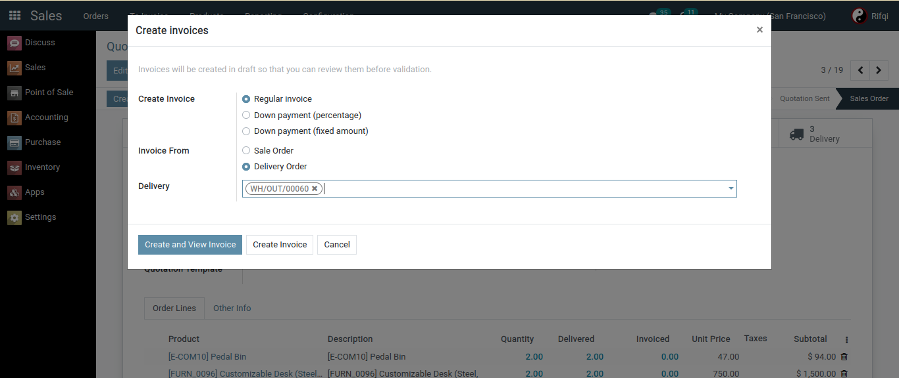
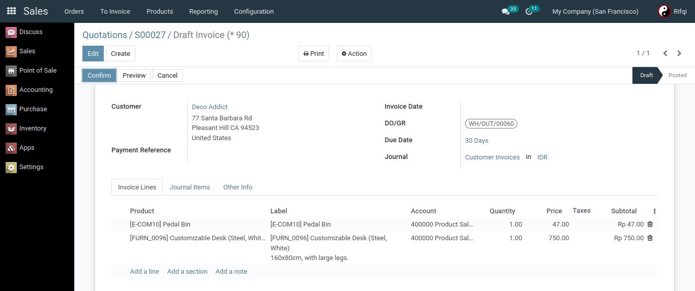

Give you more choices in making invoices, Because it can create an invoice from Delivery Order or Sale Order.
There will be a Delivery Order option when you select Regular Invoice, only the Delivery Order is in the done state.
In the Invoice there will be a field that represents the Delivery Order that was created by the Invoice.
The quantity will match the quantity in the selected Delivery Order.
